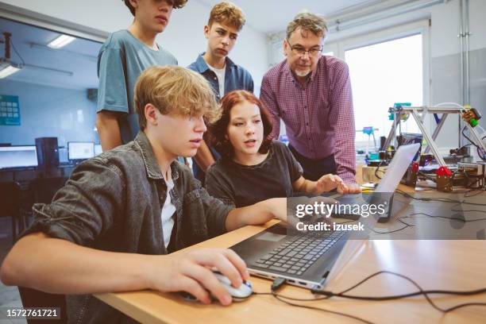

¿A Quiénes esta Dirigido?
A estudiantes de entre 14 y 20 años que quieran dar sus primeros pasos en la informática, sin necesidad de conocimientos previos.
Nuestros Programas estan diseñados para acercar la
programacion a mas personas brindando informacion , apoyo economico y
experiencia practica.
Buscamos generar
Oportunidades reales en el mundo tecnologico
para quienes mas lo necesitan.
Código Semilla es un programa introductorio que busca acercar la
programación a jóvenes sin experiencia previa.
A través de talleres prácticos, los participantes aprenden lógica
básica, desarrollo web y pensamiento computacional desde cero.
A estudiantes de entre 14 y 20 años que quieran dar sus primeros pasos en la informática, sin necesidad de conocimientos previos.
Los interesados deben completar un formulario de inscripción en la
web.
Los cupos son limitados y se prioriza a quienes no hayan tenido
acceso previo a educación tecnológica.
Este programa brinda apoyo económico y acompañamiento educativo a
estudiantes que desean profundizar sus conocimientos en
programación.
Incluye acceso a cursos pagos, mentorías personalizadas y seguimiento
académico.
A jóvenes con conocimientos básicos/intermedios en programación que necesiten apoyo económico para continuar su formación.
Se debe presentar una solicitud con información personal, motivación y situación socioeconómica. Los seleccionados pasan por una entrevista con el equipo de la ONG.

Tech Puentes conecta a estudiantes avanzados con proyectos reales, permitiéndoles aplicar sus conocimientos en situaciones concretas. Se trabaja en equipo desarrollando soluciones tecnológicas para organizaciones sociales o pequeños emprendimientos.
A estudiantes con conocimientos intermedios o avanzados en programación que quieran ganar experiencia práctica.
Los interesados pueden postularse enviando su portfolio o proyectos previos. Luego se los asigna a un equipo de trabajo según su perfil.